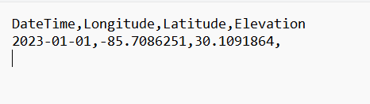

Access to OPTICS
OPTICS Insight requires credentials to the web-hosted tool. Once credentials are issues, the tool can be accessed from the OPTICS Insight server. For assistance regarding access to OPTICS Insight please contact ENTER
Input File Format and Naming
OPTICS reads in user QA/QC data collected from a variety of instrument sensors including optical and acoustic devices, samples collected for laboratory analysis, and GPS positioning. To enhance compatibility with various sensors and platforms, a standardized CSV (Comma Separated Values) file is utilized by the software. Currently, OPTICS performs the analysis for a fixed geographic and fixed depth station. The three primary file templates for a single fixed platform with sensors measuring at a single depth for a single instant are 1) a csv of predictor variables (sensor data), 2) a csv of response variables (laboratory data) and, 3) a csv of station locations (sensor coordinates).
The format of csv files takes a standardized approach to naming convention of the files and columns. The names of the files and columns control the location descriptions and variable names within the GUI interface.
File Names
The two types of file names that are currently used are fixed depth sensor data (predictor variables) and data collected and analyzed within a laboratory (response variables).
For fixed location sensor data, the file naming format is Station_LocationIdentifier_Sensor.csv The prefix Station indicates a stationary latitude and longitude, as opposed to transects or mobile data with variable latitude and longitude. The StationIdentifier is a user defined alphanumeric code such as (e.g., 001, 001B, AB2). The Sensor variable files have columns indicating the variable. The first column in the csv must be the named DateTime and have format yyyy-mm-dd HH:MM:SS.SS, where yyyy is the four digit year, mm is the two digit month, dd is the 2 digit day with leading zero for days 1-9, HH is the two digit hour, MM is the two digit minutes, and SS.SS is the seconds including any decimal seconds. The time zone is not specified, and the user must ensure consistency across datasets. The remaining columns can be specified in any order and have format VariableName_Units. The position of the underscore determines the differences between the variable name and units displayed in OPTICS. Variable names and units can include special characters “-“ and “/” and spaces. For the sensor data, each row for each variable must match the value in the DateTime column.
Each StationIdentifier has a fixed and unique latitude and longitude that is specified in the file Station_ StationIdentifier_Sensor_Coordinates.csv. The coordinates file must include columns DateTime (formatted as above or limited to just yyyy-mm-dd), Longitude, Latitude, and Elevation. For fixed station locations, this file will consist of only a single row and the elevation column can be left blank.

The response variable file (laboratory data) uses the naming format Station_StationIdentifier_Laboratory_LaboratoryVariable.csv. where StationIdentifier uses the same name as defined above and LaboratoryVariable indicates the response variable name (e.g. TPCBs). The first column in the file is DateTime with the same format specified above for the Sensor file. The second column consists of the VariableName_Units. For unitless variables, include an underscore after the variable name (e.g., TPCBs_).
Importing Data
Data for OPTICS analysis is required to be zipped and uploaded to the tool for use. All .csv files associated with a project must be placed in the same folder after formatting above. Once zipped, navigate to tool using the link provided under “Access to OPTICS,” and either select “Example data” or “Upload zip file.” For custom analyses, select “Upload zip file” and navigate to the folder containing the project files.
Station Selection
Prior to reviewing data, all stations containing a coordinates file is displayed on a map. Navigate to the station of interest to select it for review and analysis. If multiple stations exist with the same latitude and longitude (e.g., one sensor is at depth, one is at the surface), then hoovering over the location marker will expand the site to reveal the two or more locations and allow for selection. The marker for a multi-station site will appear as a different color with a number corresponding to the number of stations at that location. The map is interactive and can be navigated in the same was as any digital map. Selecting a station will open the “Input” tab - navigate to “Reviewing Data” on the menu to learn more about this next step.